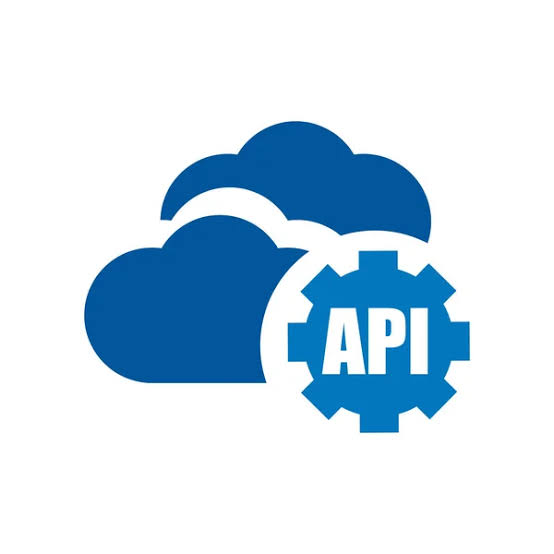

APIs e
Integrações
Conceitos, Tipos e Ferramentas
Disciplina: Desenvolvimento Web (DWEB)
Aluno: Victor Favarin | Professora: Profª Denilce Veloso
Instituição: FATEC Sorocaba
Ler Artigo

1. Introdução
As Application Programming Interfaces (APIs), ou Interfaces de Programação de Aplicativos, são mecanismos fundamentais para a integração entre sistemas de software. Em termos gerais, uma API define uma forma organizada para que um programa utilize funcionalidades ou dados oferecidos por outro programa, reduzindo a necessidade de conhecer os detalhes internos de sua implementação. No contexto Web, as APIs frequentemente utilizam HTTP e permitem que front-ends, aplicações móveis, serviços de terceiros e outros sistemas troquem informações.
O tema é especialmente relevante no desenvolvimento Web contemporâneo porque aplicações podem ser compostas por diferentes serviços, bancos de dados, aplicações móveis e microserviços. O próprio material da disciplina apresenta API, Web API e Web Service como conceitos relacionados, mas distintos, e destaca que endpoints são pontos de acesso a funcionalidades de uma API. Também ressalta que uma API pode existir em um sistema monolítico ou em uma arquitetura de microserviços.
2. Conceitos Fundamentais
2.1 O que é uma API?
API é uma interface que estabelece um conjunto de regras para que um software possa interagir com outro software. Ela funciona como um contrato de comunicação: o consumidor da API precisa conhecer a interface disponibilizada, mas não necessariamente precisa conhecer a implementação interna do serviço.
Essa separação favorece o reaproveitamento de funcionalidades. Por exemplo, um sistema de comércio eletrônico pode utilizar uma API de pagamentos sem implementar internamente toda a infraestrutura necessária para processar uma transação. Da mesma maneira, um aplicativo pode consultar uma API de mapas ou de previsão do tempo para incorporar esses recursos à sua própria interface.
2.2 API, Web API e Web Service
Os três termos não são sinônimos:
API — Conceito mais amplo: uma interface para acesso programático a funcionalidades ou dados.
Web API — API disponibilizada por tecnologias da Web, normalmente utilizando HTTP.
Web Service — Serviço de software destinado à comunicação entre sistemas por meio de tecnologias e protocolos de rede (como SOAP e REST).
2.3 Endpoints
Endpoint é um ponto específico de acesso a uma API ou serviço. Em uma Web API, normalmente é identificado por uma URL ou URI e acessado por meio de uma requisição HTTP.
GET /api/users— Utilizado para consultar usuários.GET /api/tasks— Utilizado para consultar tarefas.
2.4 Requisição, Resposta e Métodos HTTP
Em uma integração típica, o cliente envia uma requisição e recebe uma resposta contendo código de status, cabeçalhos e dados.
GET (Consulta de Recursos)
POST (Criação de Recursos)
2.5 Formatos de Dados
JSON: Um dos formatos mais comuns em Web APIs por representar dados
estruturados de forma simples e de fácil processamento.
XML: Utilizado especialmente em tecnologias e integrações baseadas em SOAP e em
sistemas corporativos legados.
3. Tipos e Formas de Classificação
Classificação quanto ao Acesso
- APIs Públicas: Disponibilizadas para consumidores externos mediante documentação e autenticação.
- APIs Privadas: Utilizadas internamente por uma organização para comunicação entre sistemas.
- APIs de Parceiros: Disponibilizadas a parceiros específicos para integrações controladas.
Estilos Arquiteturais e Protocolos
REST (Representational State Transfer): Estilo arquitetural definido por Roy
Fielding em 2000. Destaca-se pela separação cliente-servidor, ausência de estado
(stateless), uso de URIs para recursos e reutilização dos métodos HTTP.
SOAP (Simple Object Access Protocol): Protocolo de comunicação estruturada baseado
em XML, amplamente utilizado em ambientes corporativos que exigem rígida padronização e contratos
formais.
GraphQL: Linguagem de consulta para APIs criada para permitir que o cliente
especifique exatamente os campos que precisa, evitando busca excessiva de dados
(over-fetching).
gRPC: Framework RPC de alto desempenho que utiliza Protocol Buffers, ideal para
comunicação de baixa latência em microsserviços.
4. Integrações e Arquiteturas
Aplicações Monolíticas vs Microserviços
A existência de uma API não significa obrigatoriamente que a aplicação seja composta por microserviços. Um sistema monolítico pode expor uma API REST para se comunicar com um front-end moderno. Por outro lado, em uma arquitetura de microserviços, cada domínio de negócio (ex: Usuários, Pedidos, Pagamentos) possui sua própria API independente.
Front-End e Serviços de Terceiros
Em Single Page Applications (SPAs), o front-end consome APIs para carregar dados dinamicamente. Além disso, APIs de terceiros permitem incorporar facilmente serviços como gateways de pagamento, mapas, autenticação e inteligência artificial.
5. Ferramentas e Ecossistema
Tabela de Ferramentas e Especificações
| Ferramenta / Padrão | Categoria | Descrição / Função |
|---|---|---|
| OpenAPI (v3.2.0) | Especificação | Padronização de contratos de APIs HTTP para geração de documentação e código. |
| Postman | Plataforma de Testes | Envio de requisições, testes de integração, automação e validação de contratos. |
| Swagger UI | Documentação | Interface gráfica para visualização e interação com especificações OpenAPI. |
6. Segurança de APIs
OWASP API Security Top 10 (2023)
Como APIs expõem dados diretamente, a segurança deve ser planejada desde o projeto. A vulnerabilidade mais crítica apontada pela OWASP é o Broken Object Level Authorization (BOLA), onde um usuário autenticado consegue acessar dados de outro usuário alterando o ID no endpoint.
Principais Boas Práticas de Segurança
- Autenticação e Autorização
- Uso de tokens seguros (ex: JWT/OAuth2) e verificação de permissões em nível de objeto.
- Validação de Entradas & Rate Limiting
- Sanitização de dados e limitação de taxa para prevenir ataques de força bruta e DoS.
- Criptografia
- Uso obrigatório de HTTPS para proteger os dados em trânsito.
7. Exemplos Práticos e Boas Práticas
Desafios na Evolução de APIs
Projetar uma API exige manter compatibilidade retroativa, versionamento
adequado (ex: /v1/, /v2/) e comunicação clara entre equipes para
evitar falhas em sistemas consumidores.
8. Referências Bibliográficas
- AMAZON WEB SERVICES. O que é o Amazon API Gateway? Disponível em: <https://docs.aws.amazon.com/pt_br/apigateway/latest/developerguide/welcome.html>. Acesso em: 12 ago. 2026.
- AMAZON WEB SERVICES. O que é uma API RESTful? Disponível em: <https://aws.amazon.com/pt/what-is/restful-api/>. Acesso em: 12 ago. 2026.
- ENGDB. Tipos de API. Disponível em: <https://blog.engdb.com.br/tipos-de-api/>. Acesso em: 12 ago. 2026.
- FIELDING, Roy Thomas. Architectural Styles and the Design of Network-based Software Architectures. University of California, Irvine, 2000.
- gRPC. Introduction to gRPC. Disponível em: <https://grpc.io/docs/what-is-grpc/introduction/>. Acesso em: 12 ago. 2026.
- IBM. O que é uma API (interface de programação de aplicativos)? Disponível em: <https://www.ibm.com/br-pt/think/topics/api>. Acesso em: 12 ago. 2026.
- IBM. O que é integração com API? Disponível em: <https://www.ibm.com/br-pt/think/topics/api-integration>. Acesso em: 12 ago. 2026.
- IBM. O que é segurança de API? Disponível em: <https://www.ibm.com/br-pt/think/topics/api-security>. Acesso em: 12 ago. 2026.
- OWASP FOUNDATION. OWASP Top 10 API Security Risks – 2023. 2023. Disponível em: <https://owasp.org/API-Security/editions/2023/en/0x11-t10/>. Acesso em: 12 ago. 2026.
- POSTMAN. Postman Documentation. Disponível em: <https://learning.postman.com/docs/introduction/overview/>. Acesso em: 12 ago. 2026.